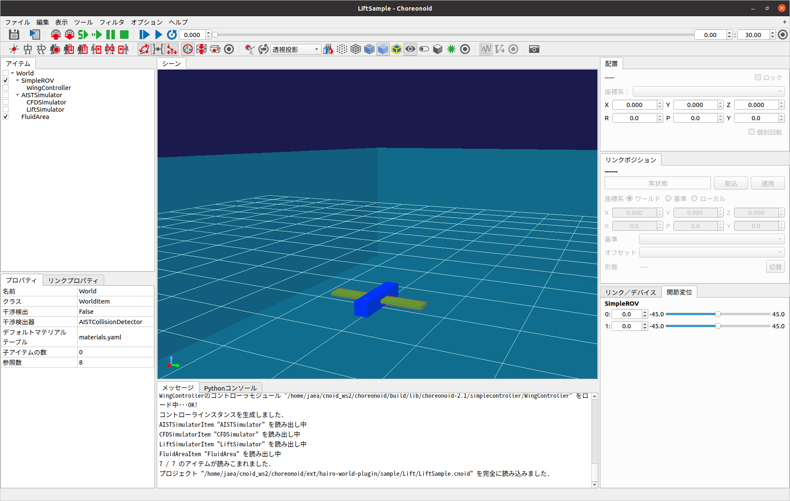

揚力のシミュレーション
ここでは、LiftSimulatorを使った揚力のシミュレートの仕方を説明します。なお、この機能は試験的に実装したものであり、動作や計算の精度について十分に検証されておりません。予めご了承ください。
CMakeによるビルド設定
まず、cmakeコマンドを使ってMakefileを更新します。Choreonoidのビルドディレクトリ上で
cmake ..
を実行すると、必要なライブラリをチェックしMakefileを更新します。(cmakeコマンドのあとのピリオドに注意してください。）
次にPHITSプラグインを有効にします。Choreonoidのビルドディレクトリ上でccmakeコマンドを
ccmake ..
と実行し、BUILD_LIFT_SAMPLE を "ON" にします。
Choreonoidのビルドとインストール
CMakeによりMakefileの生成が成功すれば、makeコマンドでChoreonoidをビルドします。Choreonoidのビルドとインストールについては Choreonoidのビルド 以降を参照してください。
LiftSimulatorの作成と設定
ここではChoreonoidの標準のシミュレータアイテムである「AISTシミュレータ」を用います。メインメニューの「ファイル」-「新規」-「LiftSimulator」を選択して生成してください。生成したLiftSimulatorは、AISTシミュレータアイテムの子アイテムとして配置します。
ウイングデバイスの設定
LiftSimulatorでは、ウイングデバイスが設定されたリンクに作用する揚力を計算し、挙動に反映します。なおウイングデバイスは、ボディアイテムのローカル座標系のX軸+方向を初期方向としています。
ウイングデバイスは、カメラやライト等と同様に任意のリンクのelements以下に記述します。
-
type: WingDevice
name: Wing
on: true
symbol: true
各キーの詳細は以下の通りです。
パラメータ |
デフォルト値 |
単位 |
意味 |
|---|---|---|---|
type |
- |
- |
デバイスの種類を指定します。 |
name |
- |
- |
ウイングデバイス名を指定します。 |
on |
true |
- |
ウイングデバイスを有効/無効を指定します。 |
symbol |
true |
- |
ウイングデバイスの表示/非表示を指定します。 |
流体力学シミュレータの作成と設定
流体力学シミュレータは、ボディに作用する浮力・抵抗力を計算するためのアイテムです。揚力のシミュレーションをするときに、浮力・抵抗力も同時にシミュレートするときは、流体力学シミュレータを設定してください。設定の詳細については、ROV／UAVのシミュレーション を参照してください。
流体領域アイテムの作成と設定
流体領域アイテムは、Choreonoidのワールド内に水・空気等が存在する領域を仮想的に定義するためのアイテムです。揚力のシミュレーションでは、揚力の計算時に流体領域アイテムに設定されている流体の密度を参照して揚力を計算します。設定の詳細については、ROV／UAVのシミュレーション を参照してください。
サンプルの実行
以上の設定をしたサンプルプロジェクト"LiftSample.cnoid"がsample/Lift以下に用意されています。プロジェクトを読み込むと以下の画面が表示され、シミュレーションを実行できます。このプロジェクトでは、ROVに取り付けられたの翼（緑色のリンク）の角度をゲームパッドの左スティック（DUALSHOCK 4の場合）で操作して、ROVの上昇と下降を模擬します。
